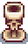
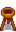
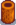
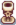

Skull Brazier
| Skull Brazier | |
|  | |
| Provides a moderate amount of light. | |
| Information | |
| Source | Crafting |
| Sell Price | Cannot be sold |
| Crafting | |
| Recipe Source | Carpenter's Shop ( |
| Ingredients | |
The Skull Brazier is a crafted lighting item that can be placed indoors or outdoors. Right-clicking on the brazier toggles the fire on and off. When toggled on, the brazier influences a radius of approximately 7 tiles with a moderate amount of light.
Brazier recipes can be purchased at the Carpenter's Shop. All brazier recipes are available from the start of the game on any day of the week as long as they haven't been purchased already.
-  Wooden Brazier (
 250g)
250g) - Stone Brazier (400g)
- Barrel Brazier (800g)
-  Stump Brazier (800g)
- Gold Brazier (1,000g)
- Carved Brazier (2,000g)
-  Skull Brazier (3,000g)
- Marble Brazier (5,000g)
In total, buying all recipes for braziers costs  13,250g.
13,250g.
History
- 1.5: Changed recipe from 10 Hardwood, 1 Solar Essence, and 1 Coal to 10 Bone Fragments.
- 1.6: Brazier recipes can now be bought from the Carpenter's Shop in any order (previously they could only be purchased one at a time in order of ascending price).
| Craftable Lighting | |
|---|---|
| Craftable Lighting | Barrel Brazier • Campfire • Carved Brazier • Gold Brazier • Iron Lamp-post • Jack-O-Lantern • Marble Brazier • Skull Brazier • Stone Brazier • Stump Brazier • Torch • Wood Lamp-post • Wooden Brazier |